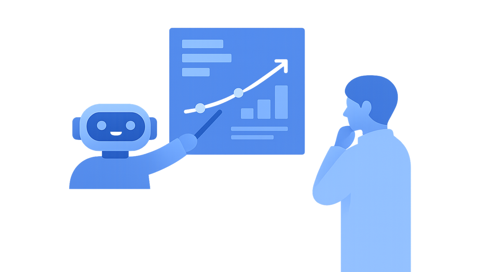
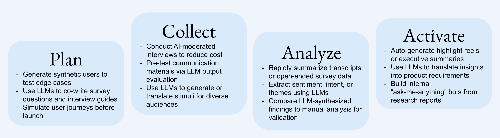

Case study
Beyond Buzzwords: Integrating LLMs Into UX Research
From planning to activation, a real-world breakdown of how LLMs can actually support UX research.
This case study translates the key insights from my peer-reviewed publication
“Beyond Buzzwords: The Development of Large Language Models and Their Use in Advertising and Strategic Communication Research”
 into actionable strategies for UX research. In it, we proposed a conceptual framework for understanding how LLMs are being used in advertising research—and by extension, how these tools can be meaningfully applied within product and UX research workflows.
into actionable strategies for UX research. In it, we proposed a conceptual framework for understanding how LLMs are being used in advertising research—and by extension, how these tools can be meaningfully applied within product and UX research workflows.
Drawing on our PRISMA-guided literature review of 68 empirical studies, we identified three major LLM use cases relevant to UXR:
| Use Case | What It Looks Like in UXR | Opportunity |
|---|---|---|
| LLM Output Testing | Researchers evaluate the quality, tone, or persuasiveness of LLM-generated content | Test how LLMs could augment user-facing microcopy, onboarding flows, or assistive agents |
| LLM as a Tool | LLMs are used to support research operations—e.g., transcript summarization, diary study synthesis, or survey generation | Reduce researcher load during data collection and early synthesis while speeding up iteration cycles |
| LLM-to-Human Comparison | LLMs stand in for participants (“silicon samples”) to pretest studies or simulate edge cases | Explore how synthetic users might predict or pressure-test user journeys before rollout |
Each category reflects not only a use of LLMs, but a different mental model of what role LLMs should play in research: as a generator, a collaborator, or a proxy.
From Literature to Practice: What LLMs Actually Do for UX Research
While LLM adoption is accelerating across industry, the literature reveals a gap between how these models are used and how well they are understood. In our review, most empirical studies demonstrated feasibility—showing that LLMs can generate content, summarize text, or simulate users—but fewer addressed when these uses meaningfully improve research outcomes versus introducing hidden risk.
Below, I translate each of the three dominant LLM use cases identified in the literature into concrete UX research applications, highlighting both their value and their limits.
1. LLM Output Testing: Evaluating AI-Generated Experiences
In advertising and communication research, LLM output testing is the most common application. Studies in this category ask a simple question: how good is the content produced by an LLM? Researchers evaluate AI-generated ad copy, headlines, health information, or persuasive messages using human participants, expert judges, or content analysis.
Findings across this literature are consistent: LLM-generated content often performs surprisingly well on surface-level measures like fluency, clarity, and perceived quality. In some cases, participants cannot reliably distinguish AI-generated content from human-authored material. However, deeper issues—such as bias, hallucination, or subtle misinformation—frequently go unnoticed without expert review.
Translation to UXR: For product teams, this maps directly onto evaluating AI-powered features such as onboarding copy, help center responses, chatbots, search summaries, or recommendation explanations.
Rather than asking “Is this AI good?”, UXR reframes the question as:
- Do users trust AI-generated explanations?
- Where does AI output feel helpful versus uncanny or overconfident?
- Which errors are visible to users—and which quietly degrade decision-making?
In practice, LLM output testing becomes a form of experience validation, where the researcher’s role is not to optimize language quality alone, but to surface downstream effects on trust, comprehension, and behavior.
2. LLMs as Research Tools: Accelerating (and Reshaping) Research Workflows

The second major category identified in the literature positions LLMs not as objects of study, but as instruments that assist the research process itself. These studies use LLMs to summarize transcripts, classify sentiment, generate survey items, assist with literature reviews, or synthesize qualitative data.
Across both quantitative and qualitative research, LLM tools consistently improved speed and scale. Researchers reported faster synthesis cycles, lower costs, and increased feasibility for large datasets that would otherwise be prohibitive to analyze manually.
However, the literature also surfaces important caveats. LLMs tend to:
- Overrepresent dominant themes while underweighting minority or edge-case perspectives
- Produce confident summaries without transparent attribution
- Mask uncertainty by smoothing over contradictions in participant data
Translation to UXR: In real product teams, this category aligns with day-to-day research operations:
- Summarizing dozens of interview transcripts after a sprint
- Clustering open-ended survey responses
- Drafting research readouts for stakeholders
When applied thoughtfully, LLMs function best as first-pass synthesizers rather than final arbiters of insight. They are effective at pattern surfacing, but not pattern interpretation.
This shifts the researcher’s role from manual coding toward sensemaking, validation, and triangulation—deciding which patterns matter, which are artifacts of the model, and which warrant deeper investigation.
3. LLM-to-Human Comparison: Simulated Users and “Silicon Samples”
The most conceptually provocative category in the literature treats LLMs as stand-ins for human participants. These studies compare LLM-generated responses to human data across classic experiments, persuasive tasks, or consumer decision scenarios.
Results are mixed but revealing. LLMs often approximate average human responses remarkably well, particularly for well-studied populations and mainstream viewpoints. However, they struggle with:
- Novel or rapidly changing contexts
- Marginalized or underrepresented perspectives
- Embodied, emotional, or situational constraints
Translation to UXR: While LLMs should not replace human participants, they offer compelling value earlier in the research lifecycle.
In practice, this looks like:
- Pressure-testing user flows before recruiting participants
- Simulating edge cases to identify blind spots in journey maps
- Pre-validating survey logic or experimental manipulations
Rather than acting as “synthetic users,” LLMs function best as hypothesis stress-testers—revealing where assumptions break down before real users ever see the product.
Importantly, this use case raises ethical and epistemological questions that mirror those surfaced in advertising research: what does it mean to generalize from a model trained on historical data, and whose experiences are implicitly encoded—or excluded—in that training?
For UX researchers, this reinforces a core principle: LLMs can inform research design, but they cannot replace the lived complexity of human experience.
···
Much of the hype around LLMs in UX research collapses wildly different practices into a single narrative: AI will automate research. The literature tells a more nuanced story. What emerges instead is a set of distinct roles that LLMs play at different moments in the research process—sometimes accelerating work, sometimes reshaping it, and sometimes introducing new risks.
To move beyond abstract claims, the following framework situates LLM use within the UX research lifecycle, showing how these tools are currently applied from planning through activation, and where their strengths— and limits—are most pronounced.

Design Implications for UXR Practice
- UX research teams need clearer frameworks for where LLMs add rigor vs. risk
- Token limits, hallucination risk, and training bias must be actively managed—not assumed
- LLMs can assist with activation (e.g., generating highlight reels, gamified debriefs) just as much as collection
- Participant replacement is not the future—but pretesting with LLMs could save teams time and budget
Why This Matters
The future of UX research will be shaped not just by what we study, but how we study it. As AI-native companies lean into LLMs, researchers must develop internal literacy around LLM capabilities, constraints, and implementation. This case study draws from academic research to inform applied methods that are scalable, ethically grounded, and deeply aware of the cognitive gaps these tools still present.